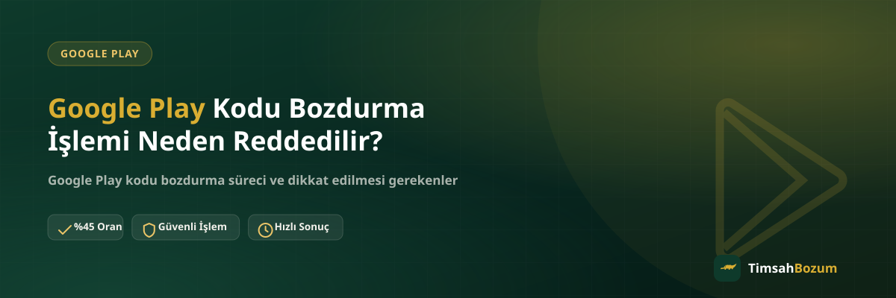

Elindeki Google Play kodunu bozdurmak için WhatsApp'tan yazdın ama işlem "reddedildi" cevabıyla karşılaştın mı? Bu durum çoğu zaman kötü niyetten değil, kodun kendi özelliklerinden kaynaklanır. Bu yazıda Google Play kodu bozdurma işleminin en sık hangi nedenlerle reddedildiğini, bu durumları nasıl anlayacağını ve önceden nasıl önleyebileceğini anlatıyoruz.
Google Play Kodu Reddedilme Nedenleri Nelerdir?
Google Play kod bozdurma, diğer bakiye tabanlı hizmetlere göre daha katı kurallara bağlı çalışır çünkü kod tek kullanımlık bir üründür ve bir kez kullanıldığında geri alınamaz. Bu yüzden işleme alınmadan önce birkaç noktanın uygun olması gerekir. Aşağıdaki başlıklarda en sık karşılaşılan ret nedenlerini tek tek ele alıyoruz.
Kod Daha Önce Kullanılmışsa Ne Olur?
En sık karşılaşılan ret sebebi budur. Kod bir Google hesabına tanımlandığı anda bakiyeye dönüşür ve o hesaba kilitlenir; bu noktadan sonra başka bir yere aktarılması veya bozdurulması mümkün olmaz. Bazen kod hediye olarak elden gelir ve daha önce başka biri tarafından kullanılmış olabilir, bazen de kişi "acaba geçerli mi" diye merak edip kodu kendi hesabına girer ve farkında olmadan bozdurma ihtimalini ortadan kaldırır. Kodu paylaşmadan önce hiçbir hesaba tanımlamamak bu riski tamamen ortadan kaldırır.
Kodun Tutarı 500 TL veya 1.000 TL Değilse Ne Olur?
TimsahBozum'da Google Play tarafında yalnızca 500 TL ve 1.000 TL değerindeki kodlar işleme alınıyor. 25, 50, 100 veya 250 TL gibi daha küçük tutarlı kodlar bu kapsamın dışında kalıyor ve bozdurma talebi bu durumda karşılanamıyor. WhatsApp'a yazmadan önce kodunun kutusunda veya dijital kod bilgisinde yazan tutarı kontrol etmek, gereksiz bir bekleme yaşamanı önler. Elinde birden fazla 500 TL veya 1.000 TL kod varsa hepsini aynı görüşmede paylaşabilirsin.
Kod Yanlış Bölgeye Aitse Reddedilir mi?
Google Play kodları ülkeye özeldir; Türkiye için basılmış bir kod yalnızca Türkiye bölgesindeki bir hesapta geçerlidir. Elindeki kod yurt dışı bir bölgeye aitse bu tek başına kesin bir ret anlamına gelmez, ancak işlem yapılıp yapılamayacağı ve varsa uygulanacak oran ayrıca değerlendirilir. Bölge bilgisini ve para birimini (TL, USD, EUR gibi) baştan paylaşman, işlemin daha hızlı netleşmesini sağlar. Bu konuyu daha ayrıntılı öğrenmek istersen Google Play kodunun bölge kilidiyle ilgili yazımıza göz atabilirsin.
Kod Eksik veya Okunaksız Paylaşılırsa Ne Olur?
Kazı-kaz alanı düzgün açılmamış, fotoğrafta bir karakter parlamış veya yazarken bir haneyi atlamış olabilirsin. Böyle durumlarda kod doğrulanamadığı için işlem geçici olarak reddedilir; bu, kodun geçersiz olduğu anlamına gelmez, sadece doğru bilgiye ihtiyaç duyulduğu anlamına gelir. Kod bilgisini mümkünse yazıyla, karakter karakter kontrol ederek paylaşmak bu tür gecikmeleri önler.
Sahte veya Geçersiz Kod Nasıl Anlaşılır?
Bazı kodlar, ikinci elden veya güvenilir olmayan kaynaklardan alındığında baştan geçersiz çıkabilir. Bu durumda kod, kullanılmış olmasa bile sistemde tanınmaz ve işlem reddedilir. Kodu nereden aldığın, bu ihtimali önceden değerlendirmen açısından önemlidir. Konuyu daha detaylı incelemek istersen Google Play kodunun sahte mi gerçek mi olduğunu anlatan yazımıza bakabilirsin.
Reddedilen Bir Kod İçin Ne Yapabilirsin?
Ret sebebi tutar veya bölge uyuşmazlığıysa, WhatsApp'tan durumu netleştirip elindeki diğer seçenekleri (örneğin bakiye tabanlı bir hizmete yönelmeyi) konuşabilirsin. Ret sebebi eksik veya okunaksız bilgiyse, doğru bilgiyi tekrar paylaşman yeterli olur ve işlem kaldığı yerden devam eder. Ancak kod zaten kullanılmışsa bu durum değişmez, çünkü kodun karşılığı olan bakiye artık bir hesaba geçmiş demektir.
Ret Durumunu Önceden Önlemek İçin Kontrol Listesi
- Kodu hiçbir Google hesabına tanımlamadığından emin ol.
- Kodun 500 TL veya 1.000 TL değerinde olduğunu kontrol et.
- Kodun hangi ülke veya bölgeye ait olduğunu not al.
- Kod bilgisini eksiksiz ve okunaklı şekilde paylaş.
- Kodu güvenilir olmayan kaynaklardan almamaya dikkat et.
Bu beş noktayı işlem öncesi gözden geçirmek, Google Play kod bozdurma sürecinin çoğu zaman ilk mesajda sonuçlanmasını sağlar. Güncel oranı ve süreçle ilgili detayları Google Play kod bozdurma sayfamızdan da inceleyebilirsin.
Ret Sonrası Düzeltilen İşlem Ne Kadar Sürede Sonuçlanır?
Ret sebebi ortadan kalktıktan sonra süreç genelde hızlı ilerler; en çok zaman alan kısım, doğru bilgiyi tekrar bir araya getirmen. Örneğin kod eksik paylaşıldıysa, karakterleri tam ve doğru şekilde tekrar gönderdiğinde doğrulama kısa sürede tamamlanır. Bölge bilgisi eksik kaldıysa, hangi ülke ve para birimine ait olduğunu belirttiğin an değerlendirme devam eder. Kodun kendisiyle ilgili bir sorun yoksa, ilk paylaşımda yaşanan gecikme ikinci denemede tekrarlanmaz. Süreyi en çok uzatan şey, aynı hatanın (örneğin yine eksik karakter) tekrar edilmesidir; bu yüzden ret nedenini net anladıktan sonra bilgiyi bir kez daha kontrol edip öyle paylaşmak en pratik yöntemdir.
Reddedilme Kötü Niyetten mi Kaynaklanır?
Hayır. Ret kararı, kod paylaşıldıktan sonra yapılan teknik bir değerlendirmenin sonucudur; hiçbir aşamada hesap şifren, e-posta doğrulama kodun veya kurtarma bilgin istenmez. Böyle bir bilgi isteyen herhangi bir kanal, resmi WhatsApp hattımız olduğunu iddia etse bile dolandırıcılık şüphesi taşır. Tüm işlemlerimiz yalnızca +90 543 887 21 71 numaralı resmi hattımız üzerinden yürür.
İlgili Yazılar
- Google Play Kodu Kullanılmışsa Ne Olur?
- Google Play Kodu Sahte mi Gerçek mi Nasıl Anlarım?
- Google Play Kodu Bölgeye Özel mi? Ülke Kilidi Nasıl Çalışır?
Google Play kodun bu yazıdaki nedenlerden herhangi biriyle örtüşmüyorsa, tutarını ve bölgesini belirterek WhatsApp hattımızdan yazabilir, işlemini başlatabilirsin.